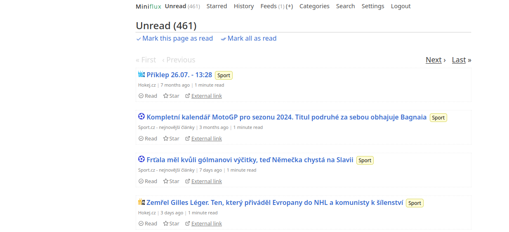

Miniflux je rychlá a efektivní RSS čtečka, kterou můžete využívat pro sledování oblíbených blogů, zpravodajských serverů nebo jiných zdrojů, které poskytují RSS kanály. Díky Minifluxu budete mít vždy přehled o nových článcích a příspěvcích na jednom místě.
Tato aplikace je navržena s důrazem na jednoduchost a výkon, takže je ideální volbou pro uživatele, kteří chtějí mít čistý a přehledný nástroj pro sledování svého informačního toku. Miniflux je open-source projekt, který můžete snadno nasadit na svůj server a mít tak plnou kontrolu nad svými daty.
Miniflux lze také snadno integrovat do Mxchatu, což vám umožní sledovat všechny vaše RSS kanály přímo z vašeho oblíbeného komunikačního prostředí. Tato integrace vám poskytuje možnost být stále v obraze, aniž byste museli opustit Mxchat.
Pro více informací navštivte oficiální stránku Miniflux nebo prozkoumejte zdrojový kód na GitHubu.
